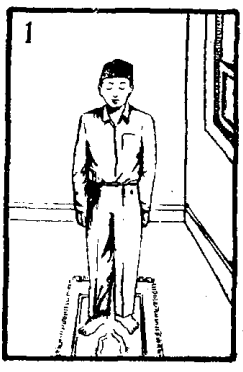
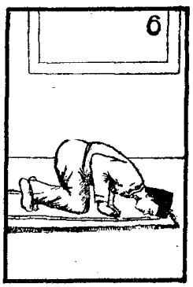
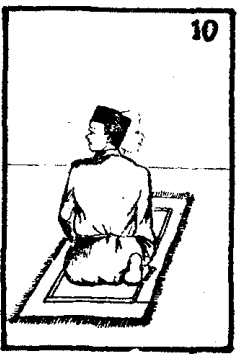

Berikut adalah panduan langkah demi langkah tata cara salat sesuai Himpunan Putusan Tarjih Muhammadiyah. Pastikan Anda sudah berwudu dengan benar sebelum memulai salat.
Apabila suara pada audio terasa kecil untuk didengar melalui Hp atau media lainnya, disarankan untuk menggunakan headset atau speaker Bluetooth atau media sejenisnya.
1. Niat
Niat di dalam hati saat memulai salat. Niat tidak perlu dilafalkan, cukup dengan kesadaran dan kehendak di dalam hati untuk menunaikan salat tertentu.
Bacaan Niat Sholat Shubuh
1.Niat Sholat Subuh sebagai Imam
اُصَلِّى فَرْضَ الصُّبْحِ رَكْعَتَيْنِ مُسْتَقْبِلَ الْقِبْلَةِ اَدَاءً اِمَامًا ِللهِ تَعَالَى
Ushalli fardhosh shubhi rok'ataini mustaqbilal qiblati adaa-an imaaman lillaahi ta'aala
Artinya:"Aku berniat shalat fardhu Shubuh dua raka'at menghadap kiblat sebagai imam karena Allah Ta'ala"
2.Niat Sholat Subuh sebagai Makmum
اُصَلِّى فَرْضَ الصُّبْحِ رَكْعَتَيْنِ مُسْتَقْبِلَ الْقِبْلَةِ اَدَاءً مَأْمُوْمًا ِللهِ تَعَالَى
Ushalli fardhosh shubhi rok'ataini mustaqbilal qiblati adaa-an ma'muuman lillaahi ta'aala
Artinya: "Aku berniat shalat fardhu Shubuh dua raka'at menghadap kiblat sebagai ma'mum karena Allah Ta'ala"
3.Niat Sholat Shubuh Munfarid (dikerjakan sendiri)
اُصَلِّى فَرْضَ الصُّبْحِ رَكْعَتَيْنِ مُسْتَقْبِلَ الْقِبْلَةِ اَدَاءً ِللهِ تَعَالَى
Ushalli fardhosh shubhi rok'ataini mustaqbilal qiblati adaa-an lillaahi ta'aala
Artinya: "Aku berniat shalat fardhu Shubuh dua raka'at menghadap kiblat karena Allah Ta'ala"
Bacaan Niat Sholat Dzuhur
1.Niat Sholat Dzuhur Sebagai Imam
اُصَلِّى فَرْضَ الظُّهْرِاَرْبَعَ رَكَعَاتٍ مُسْتَقْبِلَ الْقِبْلَةِ اَدَاءً اِمَامًا ِللهِ تَعَالَى
Ushalli fardhodl dhuhri arba'a raka'aatim mustaqbilal qiblati adaa-an imaaman lillaahi ta'aala
Artinya: "Aku berniat shalat fardhu Dzuhur empat raka'at menghadap kiblat sebagai imam karena Allah Ta'ala"
2.Niat Sholat Dzuhur Sebagai Makmum
اُصَلِّى فَرْضَ الظُّهْرِاَرْبَعَ رَكَعَاتٍ مُسْتَقْبِلَ الْقِبْلَةِ اَدَاءً مَأْمُوْمًا ِللهِ تَعَالَى
Ushalli fardhodl dhuhri arba'a raka'aatim mustaqbilal qiblati adaa-an ma'muuman lillaahi ta'aala
Artinya: "Aku berniat shalat fardhu Dzuhur empat raka'at menghadap kiblat sebagai ma'mum karena Allah Ta'ala"
3.Niat Sholat Dzuhur Munfarid (dikerjakan sendiri)
اُصَلِّى فَرْضَ الظُّهْرِاَرْبَعَ رَكَعَاتٍ مُسْتَقْبِلَ الْقِبْلَةِ اَدَاءً ِللهِ تَعَالَى
Ushalli fardhodl dhuhri arba'a raka'aatim mustaqbilal qiblati adaa-an lillaahi ta'aala
Artinya:"Aku berniat shalat fardhu Dzuhur empat raka'at menghadap kiblat karena Allah Ta'ala"
Bacaan Niat Sholat Ashar
1.Niat Sholat Ashar Sebagai Imam
اُصَلِّى فَرْضَ الْعَصْرِاَرْبَعَ رَكَعَاتٍ مُسْتَقْبِلَ الْقِبْلَةِ اَدَاءً اِمَامًا ِللهِ تَعَالَى
Ushalli fardhol 'ashri arba'a raka'aatim mustaqbilal qiblati adaa-an imaaman lillaahi ta'aala
Artinya: "Aku berniat shalat fardhu 'Ashar empat raka'at menghadap kiblat sebagai imam karena Allah Ta'ala"
2.Niat Sholat Ashar Sebagai Makmum
اُصَلِّى فَرْضَ الْعَصْرِاَرْبَعَ رَكَعَاتٍ مُسْتَقْبِلَ الْقِبْلَةِ اَدَاءً مَأْمُوْمًا ِللهِ تَعَالَى
Ushalli fardhol 'ashri arba'a raka'aatim mustaqbilal qiblati adaa-an ma'muuman lillaahi ta'aala
Artinya: "Aku berniat shalat fardhu 'Ashar empat raka'at menghadap kiblat sebagai ma'mum karena Allah Ta'ala"
3.Niat Sholat Ashar Munfarid (dikerjkan sendiri)
اُصَلِّى فَرْضَ الْعَصْرِاَرْبَعَ رَكَعَاتٍ مُسْتَقْبِلَ الْقِبْلَةِ اَدَاءً ِللهِ تَعَالَى
Ushalli fardhol 'ashri arba'a raka'aatim mustaqbilal qiblati adaa-an lillaahi ta'aala
Artinya: "Aku berniat shalat fardhu 'Ashar empat raka'at menghadap kiblat karena Allah Ta'ala"
Bacaan Niat Sholat Maghrib
1.Niat Sholat Maghrib Sebagai Imam
اُصَلِّى فَرْضَ الْمَغْرِبِ ثَلاَثَ رَكَعَاتٍ مُسْتَقْبِلَ الْقِبْلَةِ اَدَاءً اِمَامًا ِللهِ تَعَالَى
Ushalli fardhol maghribi tsalaatsa raka'aatim mustaqbilal qiblati adaa-an imaaman lillaahi ta'aala
Artinya: "Aku berniat shalat fardhu Maghrib tiga raka'at menghadap kiblat sebagai imam karena Allah Ta'ala"
2.Niat Sholat Mahgrib Sebagai Makmum
اُصَلِّى فَرْضَ الْمَغْرِبِ ثَلاَثَ رَكَعَاتٍ مُسْتَقْبِلَ الْقِبْلَةِ اَدَاءً مَأْمُوْمًا ِللهِ تَعَالَى
Ushalli fardhol maghribi tsalaatsa raka'aatim mustaqbilal qiblati adaa-an ma'muuman lillaahi ta'aala
Artinya: "Aku berniat shalat fardhu Maghrib tiga raka'at menghadap kiblat sebagai ma'mum karena Allah Ta'ala"
3.Niat Sholat Magrib Munfarid (dikerjakan sendiri)
اُصَلِّى فَرْضَ الْمَغْرِبِ ثَلاَثَ رَكَعَاتٍ مُسْتَقْبِلَ الْقِبْلَةِ اَدَاءً ِللهِ تَعَالَى
Ushalli fardhol maghribi tsalaata raka'aatim mustaqbilal qiblati adaa-an lillaahi ta'aala
Artinya: "Aku berniat shalat fardhu Maghrib tiga raka'at menghadap kiblat karena Allah Ta'ala"
Bacaan Niat Sholat Isya
1.Niat Sholat Isya Sebagai Imam
اُصَلِّى فَرْضَ الْعِشَاءِ اَرْبَعَ رَكَعَاتٍ مُسْتَقْبِلَ الْقِبْلَةِ اَدَاءً اِمَامًا ِللهِ تَعَالَى
Ushalli fardhol 'isyaa-i arba'a raka'aatim mustaqbilal qiblati adaa-an imaaman lillaahi ta'aala
Artinya: "Aku berniat shalat fardhu Isya empat raka'at menghadap kiblat sebagai imam karena Allah Ta'ala"
2.Niat Sholat Isya Sebagai Makmum
اُصَلِّى فَرْضَ الْعِشَاءِ اَرْبَعَ رَكَعَاتٍ مُسْتَقْبِلَ الْQIBLATI اَدَاءً مَأْمُوْمًا ِللهِ تَعَالَى
Ushalli fardhol 'isyaa-i arba'a raka'aatim mustaqbilal qiblati adaa-an ma'muuman lillaahi ta'aala
Artinya: "Aku berniat shalat fardhu Isya empat raka'at menghadap kiblat sebagai ma'mum karena Allah Ta'ala"
3.Niat Sholat Isya Munfarid (dikerjakan sendiri)
اُصَلِّى فَرْضَ الْعِشَاءِ اَرْبَعَ رَكَعَاتٍ مُسْتَقْبِلَ الْقِبْلَةِ اَدَاءً ِللهِ تَعَالَى
Ushalli fardhol 'isyaa-i arba'a raka'aatim mustaqbilal qiblati adaa-an lillaahi ta'aala
Artinya: "Aku berniat shalat fardhu Isya empat raka'at menghadap kiblat karena Allah Ta'ala"
2. Takbiratul Ihram
Angkat kedua tangan sejajar telinga atau bahu, telapak tangan menghadap kiblat, lalu ucapkan "Allahu Akbar".

اللّٰهُ أَكْبَرُ
Allahu Akbar
3. Doa Iftitah
Doa iftitah dibaca setelah Takbiratul Ihram. Tangan disedekapkan di dada.

اللَّهُمَّ بَاعِدْ بَيْنِي وَبَيْنَ خَطَايَايَ ، كَمَا بَاعَدْتَ بَيْنَ المَشْرِقِ وَالمَغْرِبِ ، اللَّهُمَّ نَقِّنِي مِنَ الخَطَايَا ، كَمَا يُنَقَّى الثَّوْبُ الأَبْيَضُ مِنَ الدَّنَسِ ، اللَّهُمَّ اغْسِلْ خَطَايَايَ بِالْمَاءِ ، وَالثَّلْجِ ، وَالبَرَدِ
Allahumma baaid baynii wa bayna khotoyaaya kamaa baa’adta baynal masyriqi wal maghrib. Allahumma naqqinii min khotoyaaya kamaa yunaqqots tsaubul abyadhu minad danas. Allahummagh-silnii min khotoyaaya bil maa-iwats tsalji wal barod.
Artinya; Wahai Allah jauhkanlah antara aku dan kesalahan-kesalahanku sebagaimana engkau jauhkan antara timur dan barat, ya Allah bersihkanlah aku dari kesalahan sebagaimana bersihnya baju putih dari kotoran, ya Allah basuhlah kesalahan-kesalahanku dengan air, salju dan air dingin.
4. Membaca Al-Fatihah
Wajib membaca Surat Al-Fatihah di setiap rakaat.
بِسْمِ اللّٰهِ الرَّحْمٰنِ الرَّحِيْمِ. اَلْحَمْدُ لِلّٰهِ رَبِّ الْعَالَمِيْنَ. اَلرَّحْمٰنِ الرَّحِيْمِ. مَالِكِ يَوْمِ الدِّيْنِ. إِيَّاكَ نَعْبُدُ وَ إِيَّاكَ نَسْتَعِيْنُ. اِهْدِنَا الصِّرَاطَ الْمُسْتَقِيْمَ. صِرَاطَ الَّذِيْنَ أَنْعَمْتَ عَلَيْهِمْ غَيْرِ الْمَغْضُوْبِ عَلَيْهِمْ وَ لَا الضَّالِّيْنَ.
Bismillaahir Rahmaanir Rahiim. Alhamdulillaahi Rabbil 'Aalamiin. Ar Rahmaanir Rahiim. Maaliki Yawmiddiin. Iyyaaka Na'budu wa Iyyaaka Nasta'iin. Ihdinash Shiraathal Mustaqiim. Shiraathalladziina An'amta 'Alayhim Ghayril Maghdhuubi 'Alayhim wa Ladl Dhaalliin.
Artinya : "Dengan nama Allah pengasih dan penyayang. Segala puji bagi Allah, Tuhan seru sekalian alam. Yang pengasih dan penyayang. Yang menguasai hari kemudian. Pada-Mu lah aku mengabdi dan kepada-Mu lah aku meminta pertolongan. Tunjukilah kami ke jalan yang lurus. Bagaikan jalannya orang-orang yang telah Engkau beri ni'mat. Bukan jalan mereka yang pernah Engkau murkai, atau jalannya orang-orang yang sesat".
5. Membaca Surat Pendek
Setelah Al-Fatihah, di dua rakaat pertama disunahkan membaca surat atau ayat Al-Qur'an.
قُلْ هُوَ اللّٰهُ أَحَدٌ. اَللّٰهُ الصَّمَدُ. لَمْ يَلِدْ وَ لَمْ يُوْلَدْ. وَ لَمْ يَكُنْ لَهُ كُفُوًا أَحَدٌ.
Qul Huwallahu Ahad. Allahush Shamad. Lam Yalid wa Lam Yuulad. Wa Lam Yakun Lahu Kufuwan Ahad.
Artinya : Dengan nama Allah pengasih dan penyayang. "Katakanlah (hai Muhammad) ! Allah itu Esa. Allah tempat meminta. Tiada la beranak dan tiada pula Ia dilahirkan. Dan tak ada bagi-Nya seorangpun yang menyerupai-Nya".
6. Ruku'
Badan membungkuk hingga punggung rata, kedua tangan memegang lutut. Pandangan ke tempat sujud.

سُبْحَانَكَ اللّهم رَبَّنَا وَبِحَمْدِكَ اللّهم اغْفِرْلِيْ
Subhaanakallaahumma rabbanaa wabihamdika Allaahummagh firlii
Artinya: Maha Suci Engkau, ya Allah. Dan dengan memuji Engkau, ya Allah, aku memohon ampun.
7. I'tidal
Bangun dari ruku' hingga berdiri tegak, tangan kembali bersedekap.

سَمِعَ اللهُ لِمَنْ حَمِدَهُ رَبَّناَ وَلَكَ الْحَمْدُ حَمْدًا كَثِيْرًا طَيِّبًا مُبَارَكًافِيْهِ
Sami’allaahu liman hamidah. Rabbanaa wa lakal hamdu hamdan katsiran thayyiban mubaarokan fiih
Artinya: “Allah mendengar orang yang memujinya. Ya Tuhanku, bagi Mulah segala puji, pujian yang banyak, baik dan memberkati
8. Sujud
Dahi, hidung, kedua telapak tangan, kedua lutut, dan ujung-ujung jari kaki menyentuh lantai.
سُبْحَانَكَ اللهُمَّ رَبَّنَا وَبِحَمْدِكَ اللهُمَّ اغْفِرْلِيْ
Subhaanakallah humma rabbanaa wa bihamdikallahummaghfirlii
Artinya:“ Maha suci Engkau, Ya Allah, dan dengan memuji kepada Engkau, Ya Allah, aku memohon ampun”
9. Duduk di Antara Dua Sujud
Duduk tasyahud iftirasy (kaki kiri dihamparkan diduduki, kaki kanan tegak).

اَللّهُمَ اغْفِرْلِيْ وارْحَمنِيْ وَاجْبُرْنِيْ وَاهْدِنِيْ وَارْزُقْنِيْ
Allaahummaghfirlii warhamnii wajburnii wahdinii warzuqnii
Artinya :“ Ya Allah, ampunilah aku, belas kasihanilah aku, cukupilah aku, tunjukilah aku dan berikanlah rezeki kepadaku”
10. Sujud Kedua
Sama seperti sujud pertama.
سُبْحَانَكَ اللهُمَّ رَبَّنَا وَبِحَمْدِكَ اللهُمَّ اغْفِرْلِيْ
Subhaanakallah humma rabbanaa wa bihamdikallahummaghfirlii
Artinya:“ Maha suci Engkau, Ya Allah, dan dengan memuji kepada Engkau, Ya Allah, aku memohon ampun”
11. Tahiyat Awal (jika salat lebih dari 1 rakaat)
Duduk tasyahud iftirasy (sama seperti duduk antara dua sujud).

اَلتَّحِيَّاتُ لِلّٰهِ وَ الصَّلَوَاتُ وَ الطَّيِّبَاتُ. اَلسَّلَامُ عَلَيْكَ أَيُّهَا النَّبِيُّ وَ رَحْمَةُ اللّٰهِ وَ بَرَكَاتُهُ. اَلسَّلَامُ عَلَيْنَا وَ عَلَى عِبَادِ اللّٰهِ الصَّالِحِيْنَ. أَشْهَدُ أَنْ لَا إِلٰهَ إِلَّا اللّٰهُ وَ أَشْهَدُ أَنَّ مُحَمَّدًا عَبْدُهُ وَ رَسُوْلُهُ. اَللّٰهُمَّ صَلِّ عَلَى مُحَمَّدٍ .وَعَلَى آلِ مُحَمَّدٍ.
Attahiyyaatu Lillaahi was Salawaatu wat Tayyibaatu. Assalaamu 'Alayka Ayyuhan Nabiyyu wa Rahmatullaahi wa Barakaatuh. Assalaamu 'Alaynaa wa 'Alaa 'Ibaadillaahish Shaalihiin. Asyhadu An Laa Ilaaha Illallaahu wa Asyhadu Anna Muhammadan 'Abduhu wa Rasuuluh. Allaahumma Sholli 'Alaa Muhammad wa ‘ala aali Muhammad.
Artinya: “Segala kehormatan, kebahagiaan dan kebagusan adalah kepunyaan Allah, Semoga keselamatan bagi Engkau, ya Nabi Muhammad, beserta rahmat dan kebahagiaan Allah. Mudah-mudahan keselamatan juga bagi kita sekalian dan hamba-hamba Allah yang baik-baik. Aku bersaksi bahwa tiada Tuhan melainkan Allah dan aku bersaksi bahwa Muhammad itu hamba Allah dan utusan-Nya. Ya Allah, semoga shalawat tercurah kepada Muhammad dan keluarga Muhammad. ”
12. Tahiyat Akhir
Duduk tasyahud tawarruk (kaki kiri dimasukkan di bawah betis kanan, pantat menempel lantai, kaki kanan tegak).

اَلتَّحِيَّاتُ لِلّٰهِ وَ الصَّلَوَاتُ وَ الطَّيِّبَاتُ. اَلسَّلَامُ عَلَيْكَ أَيُّهَا النَّبِيُّ وَ رَحْمَةُ اللّٰهِ وَ بَرَكَاتُهُ. اَلسَّلَامُ عَلَيْنَا وَ عَلَى عِبَادِ اللّٰهِ الصَّالِحِيْنَ. أَشْهَدُ أَنْ لَا إِلٰهَ إِلَّا اللّٰهُ وَ أَشْهَدُ أَنَّ مُحَمَّدًا عَبْدُهُ وَ رَسُوْلُهُ. اَللّٰهُمَّ صَلِّ عَلَى مُحَمَّدٍ وَّ عَلٰى اٰلِ مُحَمَّدٍ كَمَا صَلَّيْتَ عَلٰى إِبْرَاهِيْمَ وَ عَلٰى اٰلِ إِبْرَاهِيْمَ. وَ بَارِكْ عَلٰى مُحَمَّدٍ وَّ عَلٰى اٰلِ مُحَمَّدٍ كَمَا بَارَكْتَ عَلٰى إِبْرَاهِيْمَ وَ عَلٰى اٰلِ إِبْرَاهِيْمَ فِي الْعَالَمِيْنَ إِنَّكَ حَمِيْدٌ مَّجِيْدٌ.
Attahiyyaatu Lillaahi was Salawaatu wat Tayyibaatu. Assalaamu 'Alayka Ayyuhan Nabiyyu wa Rahmatullaahi wa Barakaatuh. Assalaamu 'Alaynaa wa 'Alaa 'Ibaadillaahish Shaalihiin. Asyhadu An Laa Ilaaha Illallaahu wa Asyhadu Anna Muhammadan 'Abduhu wa Rasuuluh. Allaahumma Sholli 'Alaa Muhammad wa 'Alaa Aali Muhammad Kamaa Shollayta 'Alaa Ibraahiima wa 'Alaa Aali Ibraahiim. Wa Baarik 'Alaa Muhammad wa 'Alaa Aali Muhammad Kamaa Baarakta 'Alaa Ibraahiima wa 'Alaa Aali Ibraahiim Fil 'Aalamiina Innaka Hamiidum Majiid.
Artinya: “Segala kehormatan, kebahagiaan dan kebagusan adalah kepunyaan Allah, Semoga keselamatan bagi Engkau, ya Nabi Muhammad, beserta rahmat dan kebahagiaan Allah. Mudah-mudahan keselamatan juga bagi kita sekalian dan hamba-hamba Allah yang baik-baik. Aku bersaksi bahwa tiada Tuhan melainkan Allah dan aku bersaksi bahwa Muhammad itu hamba Allah dan utusan-Nya. Ya Allah, semoga shalawat tercurah kepada Muhammad dan keluarga Muhammad. Seperti rahmat yang tercurah pada Ibrahim dan keluarga Ibrahim. Dan limpahilah berkah atas Nabi Muhammad beserta para keluarganya. Seperti berkah yang Engkau berikan kepada Nabi Ibrahim dan keluarganya. Sesungguhnya Engkau Maha Terpuji lagi Maha Mulia di seluruh alam.”
Kemudian membaca doa untuk memohon perlindungan:
اَللَّهُمَّ إِنِّيْ أَعُوْذُ بِكَ مِنْ عَذَابِ جَهَنَّمَ وَمِنْ عَذَابِ الْقَبْرِ وَمِنْ فِتْنَةِ الْمَحْيَا وَالْمَمَاتِ وَمِنْ شَرِّفِتْنَةِ الْمَسِيْحِ الدَّجَّالِ
Allaahumma inni a’uudzubika min ‘adzaabil qabri wa min ‘adzaabinnaari jahannama wa min fitnatil mahyaa wal mamaati wa min fitnatil masiihid dajjaal.
Artinya: “Ya Allah, sesungguhnya aku berlindung kepadaMu dari adzab Jahannam, dari adzab kubur, dari fitnah kehidupan dan kematian, dan dari keburukan fitnah Dajjal.”
13. Salam
Mengucapkan salam pertama ke kanan hingga terlihat pipi kanan, lalu salam kedua ke kiri hingga terlihat pipi kiri.
اَلسَّلَامُ عَلَيْكُمْ وَ رَحْمَةُ اللّٰهِ
Assalaamu 'Alaykum wa Rahmatullaah